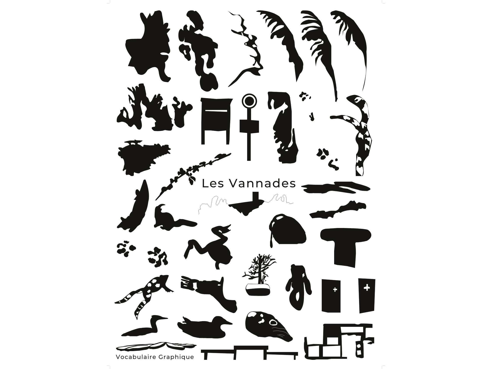
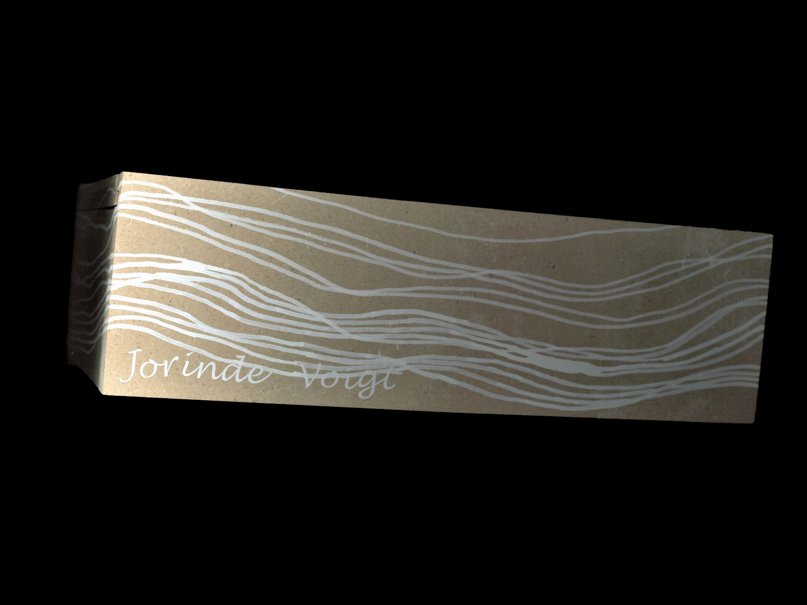
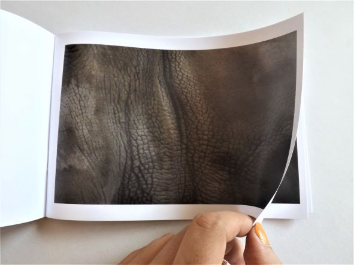
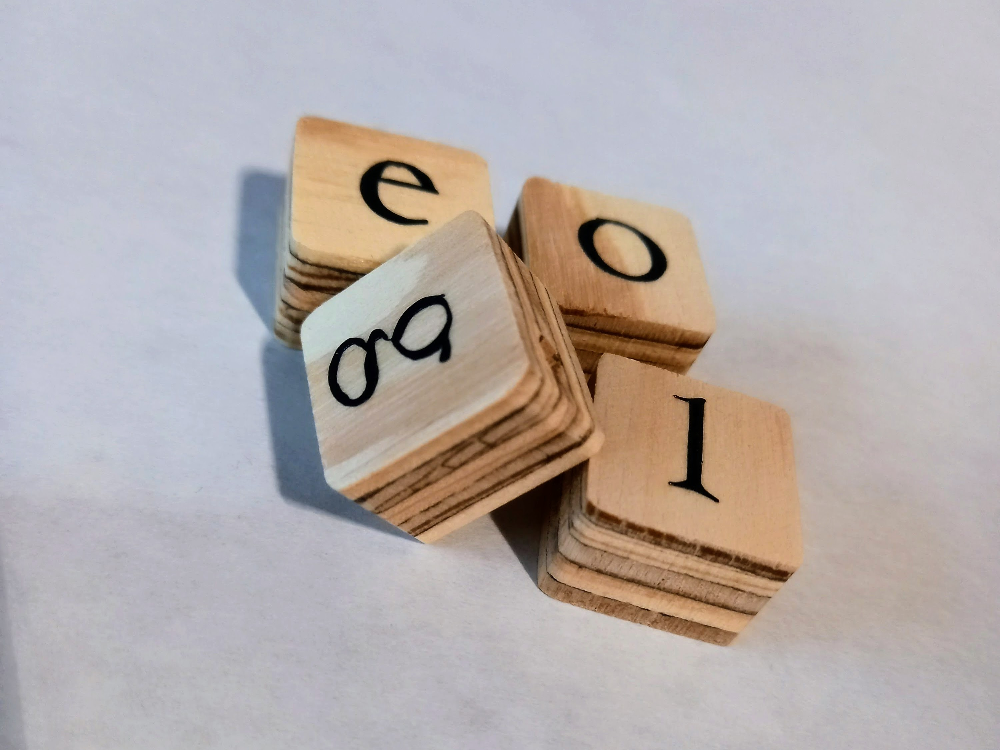
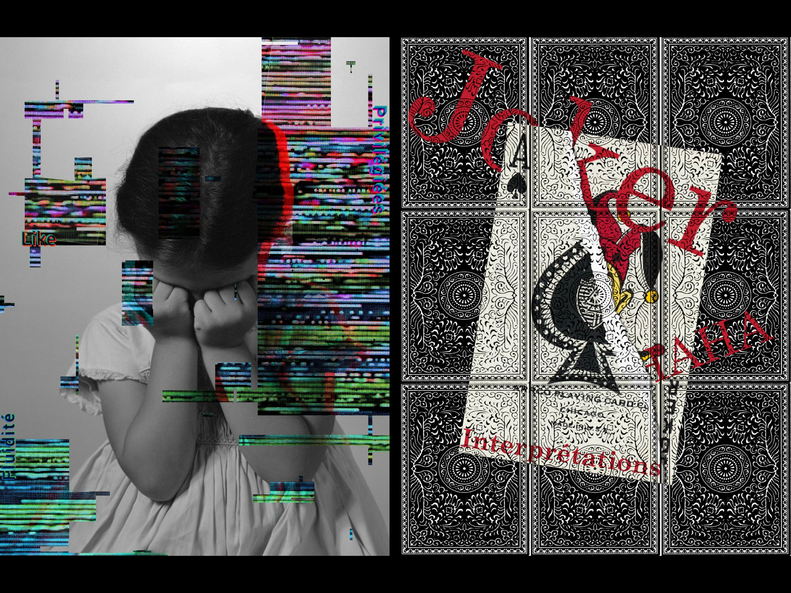
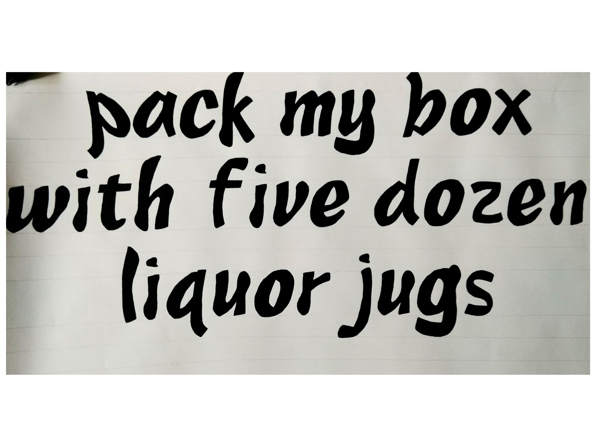
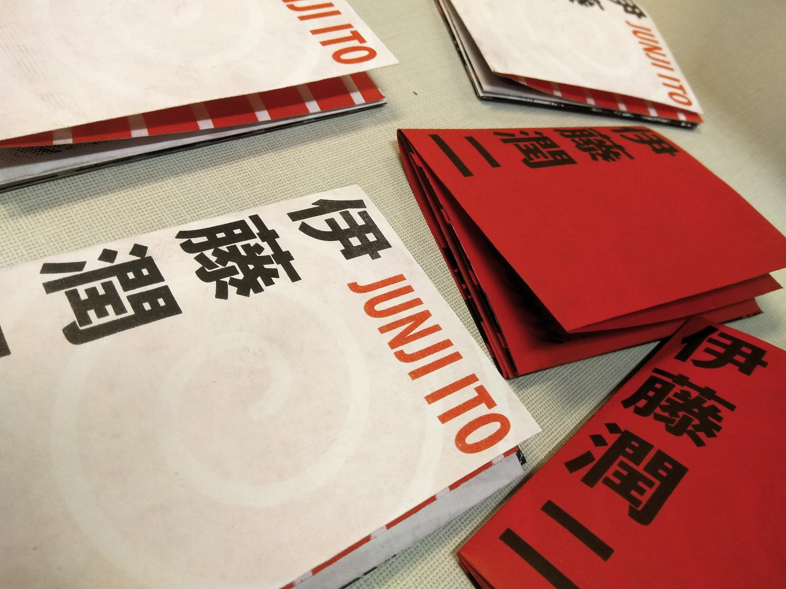

2022 Les Vannades
Une continuation du projet Vannades. Un travail sur les formes graphiques.
(60 X 80 cm)

2022 Les Vannades
L'étape de recherche de mon projet d'un lieu de notre choix. J'ai choisi le lac près de chez moi appelé Les Vannades. C'est un petit livre qui montre tout ce que j'ai récolté pendant les jours que j'ai passés là-bas. Il y a principalement des photos mais il y a aussi mes prises de notes que j'ai écrit sur le moment, des frottages et une palette de couleurs.

2022 Brill
Une affichette de mon spécimen faite en risographie.
(21 X 29.7 cm)

2022 Brill
Un spécimen pour la police Brill. Il comprend les glyphes et le texte dans différentes langues et alphabets.
(68 pages 18.8 X 21 cm)

2022 Calanques
Une section des Calanques de Marseille construite couche par couche à l'aide de carton.
(25 X 25 cm)

2022 Coffret d'Artiste
La boîte pour le contenu du livre d'artiste.

2022 Coffret d'Artiste
Une boîte de collecte pour l'artiste Jorinde Voigt. Il s'agit d'une recherche et d'une étude sur l'artiste. Il y a un livre contenant 4 interviews de l'artiste. Les 4 autres livres couvrent différents thèmes abordés par Jorinde Voigt : le noir et blanc, la couleur, le collage et l'or.

2022 Animal
Un livre issu d'un projet photographique que j'ai appelé Animale. Il contient des fragments d'animaux. Il s'agit d'une œuvre abstraite dans le sens où, pour la plupart des photos, nous ne sommes pas certains de ce que nous regardons. C'est également un travail graphique avec les marques et la texture de chaque animal.
(40 pages)

2021 Projet Scrabble
Un projet visant à compléter les pièces d'un jeu de société de Scrabble en incluant différentes polices de caractères. Mais lettres étaient : L, E, G, O et j'ai utilisé la police "Centaur".

2021 Affiches
Cinq affiches inspirées de 3-4 mots. Il s'agissait d'un projet visant à unir le texte et les images.
(60 X 80 cm)

2021 Pangramme
Création d'une police de caractères. Avec seulement quelques lettres, j'ai imaginais la suite de l'alphabet.

2021 Petit Dépliant
A travers la téchnique de la risographie, j'ai réalisé un mini dépliant de l'artiste manga Junji Ito.